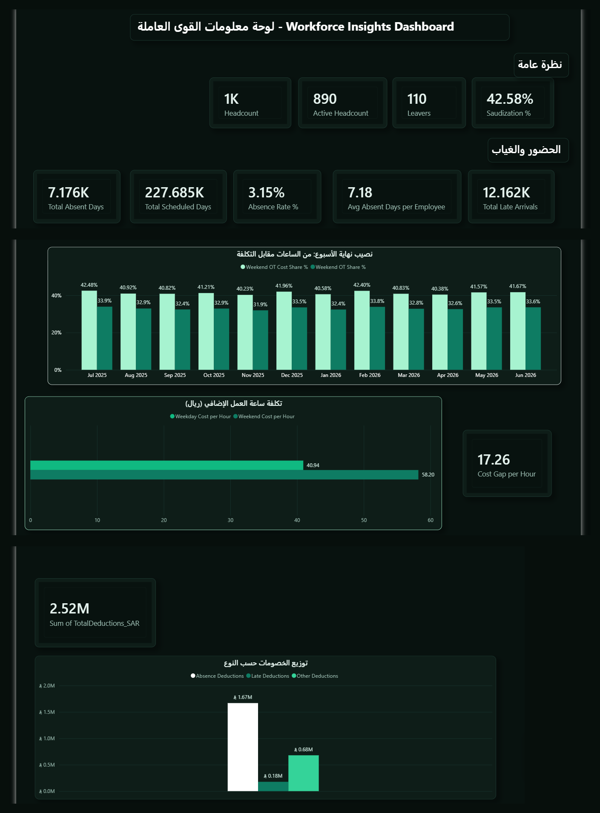

لوحة تشغيلية لشركة مقاولات — أشير إليها بـ «شركة X» — تقيس الغياب والعمل الإضافي والخصومات على مدى اثني عشر شهرًا. الهدف منها أن تجيب على سؤال الإدارة قبل أن يُطرح: أين تذهب الساعات، وأين يذهب المال؟
جدولان مرتبطان عبر الرقم الوظيفي: جدول للموظفين وبياناتهم، وجدول للحضور لكل موظف من كل شهر،
من يوليو 2025 إلى يونيو 2026. أُضيف إليهما جدول تاريخ منفصل تم بناؤه خلال التحليل بـ CALENDAR،
ليصبح النموذج على شكل نجمة (Star Schema).
جدول التاريخ مهم. بدونه يختفي أي شهر لا يحمل بيانات من الرسم بدل أن يظهر بصفر — والاختفاء أخطر من الصفر، لأن قارئ التقرير لا ينتبه لغياب شهر كامل.
| المشكلة | العدد | المعالجة |
|---|---|---|
| صفوف موظفين مكررة | 3 | حذف بناءً على الرقم الوظيفي |
قيمة جنس مختصرة M | 7 | استبدال بمطابقة الخلية كاملة |
| اسم قسم بمسافة زائدة وأحرف صغيرة | 12 | Trim ثم توحيد الأحرف |
| أيام غياب بقيمة سالبة | 10 | استبدال بصفر مع توثيق الافتراض |
| ساعات إضافية ومرات تأخر ناقصة | 30 | تُركت فارغة عمدًا |
| مواقع عمل ناقصة | 9 | تُركت فارغة عمدًا |
الفراغ يعني «لا نعرف»، والصفر يعني «لا توجد ساعات إضافية». تحويل الأول إلى الثاني يخفض متوسط العمل الإضافي بشكل وهمي. وDAX يتجاهل الفراغات في الحسابات، فلا حاجة لملئها.
لأن الصف يحمل ساعات وتأخيرات صحيحة، وحذفه يضعف من صحة البيانات.
ما حجم الشركة وكيف تنضبط؟
أين تذهب التكلفة؟
الفجوة بين العمودين الشهريين ثابتة على مدار السنة، وهي جوهر النتيجة.
على ماذا تُخصم الرواتب؟

العمل الإضافي في نهاية الأسبوع يمثّل 33.04% من الساعات، لكنه يستهلك 41.27% من التكلفة — لأن أجره مضاعف بينما أيام العمل بواحد ونصف. بالريال: 3.68 مليون من أصل 8.91 مليون.
الفارق 17.26 ريال لكل ساعة. نقل ربع ساعات نهاية الأسبوع إلى أيام العمل — نحو 15,800 ساعة — يوفّر قرابة 273 ألف ريال سنويًا بنفس عدد الساعات ونفس الإنتاجية.
الخصومات بلغت 2.52 مليون ريال، منها 66% من الغياب و27% من بنود متفرقة و7% فقط من التأخير. التأخير هو ما يستهلك وقت المشرفين في المتابعة اليومية، بينما المال الحقيقي في الغياب الكامل.
تكلفة العمل الإضافي 8.91 مليون ريال مقابل 2.52 مليون خصومات — نسبة 3.5 إلى 1. معدل الغياب 3.15% ومتوسطه 7.18 يوم للموظف سنويًا، وهي أرقام منضبطة. الضغط على الميزانية لا يأتي من غياب الموظفين، بل من ساعات حضورهم الإضافية.
نقل جزء من ساعات نهاية الأسبوع إلى أيام العمل يخفّض التكلفة دون المساس بالإنتاج. الرقم قابل للحساب مسبقًا: 17.26 ريال عن كل ساعة تُنقل.
ساعات العمل الإضافي ترتفع في أشهر الصيف: نحو 20 ألف ساعة في أغسطس ويونيو، مقابل 11 ألفًا في مارس. تغطية الذروة بالساعات الإضافية تكلّف 41 إلى 58 ريالًا للساعة، بينما التخطيط لها مسبقًا يجعلها بالأجر العادي.
معدل 3.15% على مستوى الشركة رقم منضبط، لكنه متوسط قد يخفي تركّزًا في موقع أو قسم بعينه. تبدأ المعالجة بفحص توزيع أيام الغياب على الموظفين والمواقع، لأن الإجراء يختلف بين غياب موزّع على الجميع وغياب متكرر من عدد محدود.
الغياب في هذه البيانات لا يشمل الإجازات السنوية أو المرضية أو الغيابات بإذن.
ساعات العمل الإضافي ترتفع في أشهر بعينها، وهي أشهر الصيف: بلغت ذروتها في أغسطس ويونيو قرابة 20 ألف ساعة، مقابل 11 ألفًا فقط في مارس. المعالجة تبدأ من توزيع الأعمال على أشهر السنة بدل تغطية الذروة بالساعات الإضافية بعد وقوعها.
والدرس الثاني أن اللوحة الجيدة تنتهي برقم يمكن التصرف بناءً عليه. «العمل الإضافي مرتفع» ملاحظة، و«كل ساعة تُنقل توفّر 17.26 ريال» قرار.